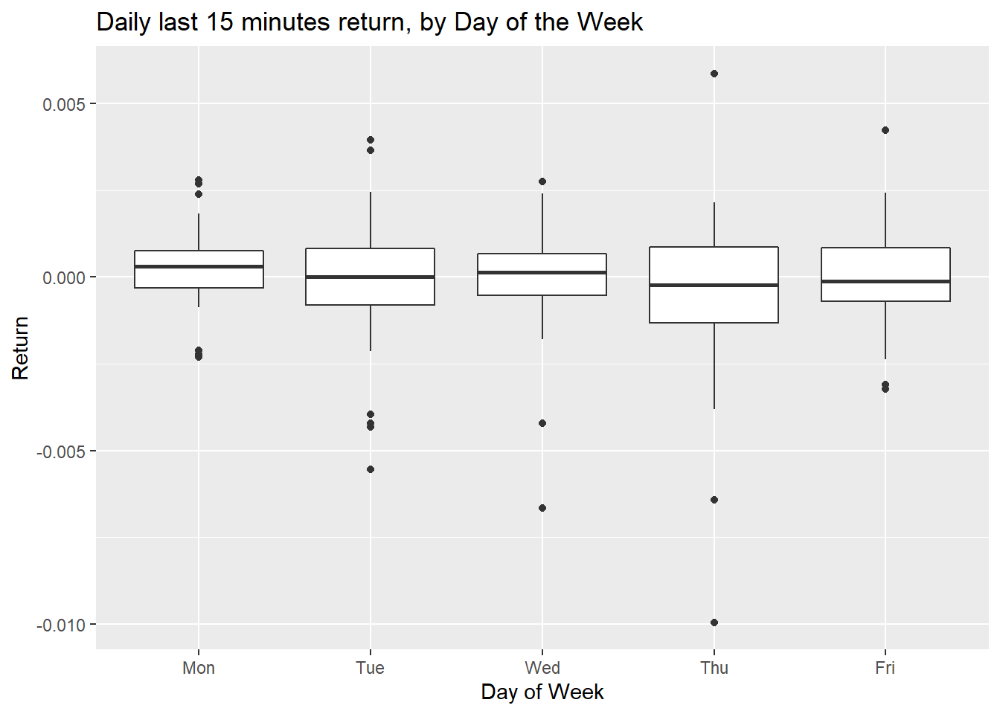
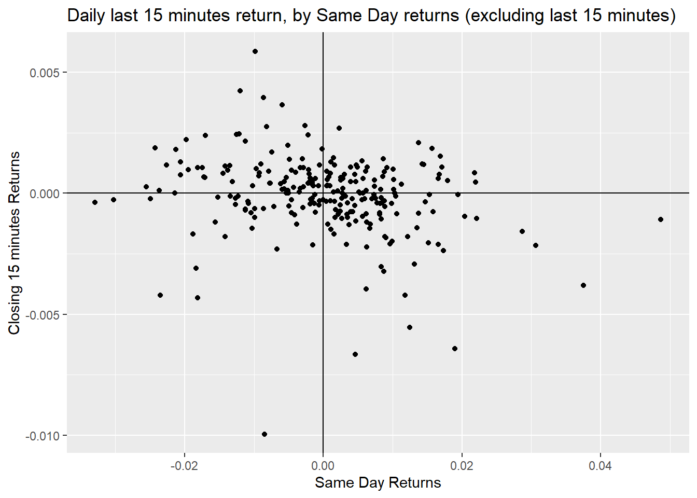

Chapter 4 Results
4.1 By Day of Week
First set of plots we did was to show how each day’s closing returns differ by Day of the Week. We thought that perhaps Friday would have a different pattern if investors and traders were to close out their positions on a weekly basis.
The first plot showed the final 15 minutes of return grouped by Day of the Week. Besides some larger variability on Thursdays there isn’t a clear distinction from this chart. most days have similar averages and ranges. 
We thought that perhaps if we defined “closing” time as the final 30 minutes instead of 15 minutes we might have a different finding. This turns out to give us that Wedsnesdays during this past year have generally experienced lower average closing 30 minutes returns.

If we stretched this out as long as final 60 minutes, the Wednesday pattern goes away, but there appears to be larger positive outliers.
4.2 By Same Day Returns
We thought that perhaps the day’s return would be a reason the closing return would be higher or lower. As it turns out if the returns earlier in the day is higher than 0.02, the closing return is usually lower. The vice versa is true for lower earlier returns to result in higher closing return. This is indicative of intraday mean reversion in return patterns.

4.3 By Other Variables
Often we can see market return be affected by the market conditions. The following charts will examine how the current market regimes might produce higher or lower closing returns.
4.3.1 VIX
VIX is known as the fear index, and is a common indicator for the level of volatility and anxiety in the market. The following chart shows that the higher the index, the more variation we’re seeing in closing returns. This is not surprising in that higher return volatility should produce a wider range of closing returns. This is likely showing more correlation than causation.
4.3.2 Net Bull Index
AAII’s Net Bull Sentiment is a net indicator of the AAII Bull Sentiment - AAII Bear Sentiment. It shows how “net” bullish investors are about the market We see below that when investors are net-bearish (negative values) the range of returns widen considerably.
4.3.3 Market P/E Ratio
P/E Ratio stands for Price to Earnings Ratio. The Market’s P/E Ratio is a pricing indicator to measure the valuation of the average market. When it’s lower, the market is pricing the earnings of the average company to be lower. The ratio is typically lower than the overall returns are lower to negative, and also consistent with that the lower the P/E Ratio is the wider closing returns appears to be.